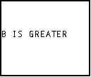
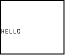
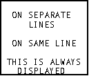
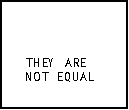

| HOME >> Tutorials >> Tutorial 4: Conditionals |
Introduction:
In this tutorial, we will learn how to use conditionals in a BASIC program. Conditionals are really important because they test something. They see: If something is what you want, Then go do the next thing. The Else statement comes if what you wanted doesn't happen. Let me explain in further...
Let's say you wanted to go to the movies with a friend. However, your mom says that the only way you're leaving the house is if you mow the lawn. If you think about it, your choice is a form of a conditional: If you mow the lawn, Then you get to go to the movies, or Else you have to stay home. The Else is there just so you do not have to write two If statements. If there wasn't an Else command, then your conditional would change to: If you mow the lawn, Then you get to go to the movies. If you don't mow the lawn (or Else), Then you have to stay home. You cannot click on the bolded words for further definitions because it is hard to define each command by itself.
New Commands:
| If | Checks if something is true |
| Then | If something is true, then do the next command |
| Else | If the something is not true, then do the next command |
| End | Identifies the end of a group of commands |
| : (Colon) | Can sometimes be used as "Then" command |
| = | Equals or equal to |
| Not equal to | |
| > | Greater than |
| < | Less than |
| Greater than or equal to | |
| Less than or equal to |
| :If conidition: Then | :If condition:command | valueA>valueB |
| :commands | valueA<value | |
| :Else | valueA=valueB | valueA |
| :commands | valueA |
valueA |
| :End |
The Codes:
There will be several different codes showing how to use these 3 conditionals. The first one is If by itself.
| : | For AShell, SOS, and TI-Explorer |
| ClrHome | Clears the home screen |
| 23 |
Stores 23 and 56 into A & B, respectively |
| If A<B | If A is less than B |
| Output(4,1,"B IS GREATER") | (Then) display "B IS GREATER" |
| If A>B:Output(4,1,"A IS GREATER") | If A is greater than B, then display "A IS GREATER" |

Now switch the values for A and B so that A equals 56 and B equals 23. When you run the program, this time it'll say "A IS GREATER." Notice the two different ways you can write an If statement. You can have the If statement on one line and then the action on the next line, or you can have both the If statement and the action on the same line. If you do write them on two separate lines, the If statement will only work for the proceeding line. Any other lines will have nothing to do with the If statement. Here's an example:
| : | For AShell, SOS, and TI-Explorer |
| ClrHome | Clears the home screen |
| 23 |
Stores 23 and 56 into A & B, respectively |
| If A=B | If A is equal to B |
| Output(3,1,"IF STATEMENT") | (Then) display "IF STATEMENT" |
| Output(5,1,"HELLO") | Display "HELLO" |

When you run this, it only displays "HELLO", because the two values aren't equal. This proves that the If statement does not affect whether the second command is displayed or not. Now change the equals sign (=) to a not equal sign ( ) and run the program. Now it displays "IF STATEMENT" and "HELLO." Next, I'm going to show you the two places you that can write the Then command.
) and run the program. Now it displays "IF STATEMENT" and "HELLO." Next, I'm going to show you the two places you that can write the Then command.
| : | For AShell, SOS, and TI-Explorer |
| ClrHome | Clears the home screen |
| 23 |
Stores 23 and 56 into A & B, respectively |
| If A |
If A is not equal to B |
| Then | Then |
| Output(2,3,"ON SEPARATE") | Display "ON SEPARATE" and |
| Output(3,6,"LINES") | Display "LINES" |
| End | End of If-Then statement |
| If B |
If B is greater than or equal A, then |
| Output(5,3,"ON SAME LINE") | Display "ON SAME LINE" |
| End | End of If-Then statement |
| Output(7,2,"THIS IS ALWAYS") | Displays "THIS IS ALWAYS" |
| Output(8,4,"DISPLAYED") | Displays "DISPLAYED" on the next line |

When you run this, it should display everything. You can put as many commands inside of the If-Then statement, as long as they have to do with the condition. When I program, I prefer to do the If-Then construction as if it was done in the second conditional. I prefer to write :If A=B:Then on the same line. Notice again how the last two lines are not affected by either of the If-Then statements. If you were to change the greater than or equal to sign ( ) to less than or equal to (
) to less than or equal to ( ), then "ON SAME LINE" wouldn't be displayed. You must remember to always put the End command at the end of each conditional statement. Now we're going to go on to If-Then-Else statements. If you weren't going to use the Else command, you would have to write your program like this:
), then "ON SAME LINE" wouldn't be displayed. You must remember to always put the End command at the end of each conditional statement. Now we're going to go on to If-Then-Else statements. If you weren't going to use the Else command, you would have to write your program like this:
| : | For AShell, SOS, and TI-Explorer |
| ClrHome | Clears the home screen |
| 23 |
Stores 23 and 56 into A & B, respectively |
| If A=B:Then | If A is equal to B, then |
| Output(3,4,"THEY ARE") | Display "THEY ARE" |
| Output(4,6,"EQUAL") | Display "EQUAL" |
| End | End of If-Then statement |
| If A |
If A is not equal to B, then |
| Output(5,4,"THEY ARE") | Display "THEY ARE" and |
| Output(6,4,"NOT EQUAL") | Displays "NOT EQUAL" |
| End | End of If-Then statement |

You should be able to understand the code. If they are equal then it'll display "THEY ARE EQUAL". If they are not equal then it'll display "THEY ARE NOT EQUAL." The next code will do exactly the same thing, but it's written differently and saves a line (which reduces program size).
| : | For AShell, SOS, and TI-Explorer |
| ClrHome | Clears the home screen |
| 23 |
Stores 23 and 56 into A & B, respectively |
| If A=B:Then | If A is equal to B, then |
| Output(3,4,"THEY ARE") | Display "THEY ARE" |
| Output(4,6,"EQUAL") | Display "EQUAL" |
| Else | If they aren't equal, then |
| Output(5,4,"THEY ARE") | Display "THEY ARE" and |
| Output(6,4,"NOT EQUAL") | Displays "NOT EQUAL" |
| End | End of If-Then-Else statement |
Conclusion:
You should also be able to understand this code. It reads: If A is equal to B, then display "THEY ARE EQUAL", if A is not equal to B(Else), display "THEY ARE NOT EQUAL." Note: that if you are going to use Else, you cannot use this construction: If A>B:Output(3,4,"HELLO"). It will not work. Right now using Else may not seem like a big difference, but believe me it is. Well there's not much more to say except that conditionals are very useful. Next up is User Input. You cannot have a game without the user doing something.
If you do not understand a particular part in this lesson, have suggestions, or find any problems please contact me.
 |
 |
| Tutorial 3 | Tutorial 5 |